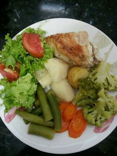

370 ideas de Recetas Económicas en 2021 | recetas, recetas para cocinar, recetas de comida

Recetas Económicas
Collection by Kiwilimón • Last updated 11 weeks ago
375 Pins • 3.86m Followers Yummy Food Instagram Breakfast Ethnic Recipes Happy Gourmet Inexpensive Meals Tasty Food Recipes Salads¿Qué Hacer de Comer con 50 Pesos?
Si necesitas ahorrarte unos cuantos pesos, estas recetas de comida económica te serán de gran ayuda.
Clean Recipes Cooking Recipes Healthy Recipes Mexican Dishes Mexican Food Recipes Healthy Meal Prep My Favorite Food Vegetable Recipes Food DishesCalabacitas Rellenas de Rajas Poblanas
· 4 reviews · 50 minutes ·Sin duda, una de las verduras preferidas de muchas personas es, la calabaza. Por eso te compartimos esta receta rendidora de Calabacitas Rellenas de Rajas Poblanas. Para poder preparar esta receta fácil con calabazas, es recomendable que no las cuezas de más, sino perderán sus propiedades y forma. Además de ser una receta económica y rendidora, es una receta que puedes preparar en 15 minutos. Otro gran tip para que tu platillo sea un éxito, es que después de la cocción de las calabazas, las…
Dessert Drinks Dessert Recipes Chipotle Fish And Chicken Cooking Recipes Healthy Recipes Mellow Yellow Curry Food And DrinkCacerola de Atún
· 7 reviews · 90 minutes ·Cocina esta práctica y fácil receta con atún, que hará de tus comidas familiares un festín. Se trata de un platillo rendidor, el cual equilibra muy bien los sabores del atún y la pasta. Además, utilizarás atún en lata, un ingrediente que siempre tenemos en la alacena, y pasta de moñitos con una salsa cremosa con un toque de chipotle. Puedes sustituir la crema por yogur y usar mayonesa baja en grasa, como una opción más saludable.
Meat Recipes Mexican Food Recipes Cooking Recipes Healthy Recipes Nopales Recipe Queso Panela Real Mexican Food Food C Easy CookingTortitas de Nopales con Jamón y Queso Panela
· 26 reviews · 50 minutes ·Si quieres que tus hijos coman más nutritivo, estas tortitas de nopales, jamón y queso panela en salsa verde son una excelente opción. Además de ser económicas y fáciles de preparar, puedes acompañarlas con ensalada o arroz para tener una comida completa.
Seafood Recipes Gourmet Recipes Pasta Recipes Mexican Food Recipes Vegetarian Recipes Cooking Recipes Healthy Recipes Vegan Vegetarian Deli FoodEnsalada de Pasta Hawaiana
· 28 reviews · 44 minutes ·Sal del apuro y prepara la comida para tu familia en unos minutos con esta receta rápida para preparar una ensalada de pasta cremosa con apio, zanahoria y jamón. Es súper rendidora para servirla en buffets o reuniones familiares.
Veggie Recipes Salad Recipes Vegetarian Recipes Cooking Recipes Healthy Recipes Mellow Yellow Budget Meals I Love Food FrijolesEnsalada de Frijoles con Vinagreta de Albahaca
· 10 reviews · 80 minutes ·Los frijoles son altos en proteínas, fibra y minerales que te ayudarán a regular tu organismo. Disfruta de esta ensalada de frijoles con vinagreta de albahaca en casa y sorprende a todos con una receta de ensalada fresca totalmente fuera de lo convencional.
Mexican Dessert Recipes Mexican Dishes Kitchen Recipes Cooking Recipes Healthy Recipes Mexican Cooking I Love Food No Cook Meals Food And DrinkTacos de Canasta con Salsa Verde Cruda
Los clásicos tacos sudados o tacos de canasta no pueden faltar en cualquier celebración, además de ricos son fáciles y económicos de preparar. Prueba haciendo esta receta de tacos de canasta de frijol, chicharrón y pollo o rellénalos con el guisado que más te guste. Son una receta mexicana económica ideal para Fiestas Patrias.
Detox Recipes Veggie Recipes Mexican Food Recipes Snack Recipes Healthy Recipes Snacks Tostadas Healthy Cooking Healthy ChoicesTostadas de Flor de Jamaica
· 4 reviews · 2.5 hours ·No tires la flor de jamaica que utilizaste para hacer agua de jamaica; utilízala para preparar estas tostadas de flor de jamaica. Una receta vegetariana y sin carne que combina lo mejor de la cocina mexicana casera.
Mexican Food Recipes Healthy Recipes Ethnic Recipes Cooking Light Weight Watchers Meals Love Food Tortillas Clean Eating Food PornTacos de Atún al Pastor
¡Esta versión económica de los tacos al pastor tradicionales te encantará! Tacos de atún al pastor con las clásicas guarniciones de cebolla, cilantro y piña; servidos sobre tortillas de maíz calientitas y acompañados de una deliciosa salsita verde. Es un receta mexicana que no te querrás perder.
Mexican Food Recipes Dessert Recipes Healthy Recipes Little Bunny Foo Foo Three Little Pigs Mellow Yellow Food And Drink Favorite Recipes LunchEnsalada de Pasta Hawaiana
· 28 reviews · 44 minutes ·Prepara esta rica receta de #pasta hawaiana de tornillos mezclada con piña, jamón, cebolla morada, un poco de apio fresco y zanahoria, con un toque cremosito de mayonesa, crema y mostaza. Es una receta fácil y rendidora que seguro le gustará a toda tu familia.
Mexican Dishes Mexican Food Recipes Deli Food Homemade Guacamole Tasty Yummy Food Spanish Food Mellow Yellow Tex MexBurrito Ahogado
· 1 review · 3 hours ·Si buscas una receta práctica y fácil de servir durante los partidos del #mundial, ¡prueba esta receta de burrito ahogado relleno de arroz y carne molida al estilo tex mex! Acompañamos con la salsa típica de las tortas ahogadas estilo Jalisco ¡Te fascinarán!
Mexican Dishes Mexican Food Recipes Homemade Guacamole Cooking Recipes Healthy Recipes Latin Food Food Humor International Recipes Soul FoodEnchiladas Divorciadas
· 7 reviews · 2.5 hours ·Si los huevos divorciados son tu desayuno preferido, no te puedes perder esta receta mexicana de enchiladas divorciadas con salsa verde y salsa roja asada. El relleno de pollo y el toque de crema y queso las volverá tu almuerzo preferido del #Mundial
Kitchen Recipes Gourmet Recipes Mexican Food Recipes Real Food Recipes Cooking Recipes Yummy Food Healthy Recipes Ethnic Recipes Healthy DrinksPastel de Arroz Poblano
· 4 reviews · 2 hours ·Sorprende a tus invitados este #mundial con este pastel de arroz verde con chile poblano y elotes. Utilizamos un molde de repostería para darle forma a esta receta casera de arroz poblano que todos tus invitados amarán.
Healthy Crockpot Recipes Healthy Eating Recipes Mexican Food Recipes Beef Recipes Vegetarian Recipes Cooking Recipes Healthy Food Avacado Dinner Coliflower RecipesPastel Azteca con Salsa de Frijol y Chipotle
Si buscas una receta económica y casera. te encantará este pastel azteca con salsa de frijol y chipotle. Puedes utilizar los ingredientes que te queden en casa para hacer las capas de tortilla con crema y queso. ¡Te encantará lo fácil que es!
Best Pasta Recipes New Recipes Cooking Recipes Healthy Recipes Mexican Food Recipes Ethnic Recipes Some Recipe Healthy Options My Favorite FoodPastel de Fideos al Chipotle
· 3 reviews · 70 minutes ·Deja a todos con la boca abierta y prepara esta increíble pastel de fideos con chipotle en tu próxima fiesta o reunión de amigos. ¡Esta receta fácil de pastel de pasta picosito los sorprenderá!
Kitchen Recipes My Recipes Snack Recipes Favorite Recipes Snacks Grilling Recipes Cooking Recipes Food Hacks Food To MakePapas Rellenas de Jamón y Queso
¿Buscas una receta para tu parrillada? Esta receta fácil de papas rellenas de jamón y queso les fascinará a todos. Prepáralas en tu carne asada en tu asador o a la parrilla y agrega el jamón y queso que más te guste. ¡Alcanzarán para todos!
Privacy